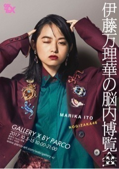
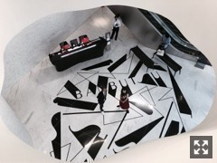
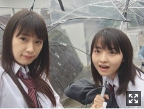

| 2017/09 20 Wed | ファーストアルバム。781回目 |
本日発表されました。
はじめて個展開きます。

『伊藤万理華の脳内博覧会』
10月5日〜15日
GALLERY X BY PARCO
東京都渋谷区宇田川町13-17
10:00-21:00
最終日のみ18:00閉場
前売り ￥500
■展示概要■
1.犬会 写真展示
カメラ/アートディレクション:伊藤万理華
スタイリング:市野沢祐大
モデル:伊藤万理華、生駒里奈、井上小百合、斉藤優里、 桜井玲香、新内眞衣、松村沙友理、若月佑美
2. ファッション・シューティング 写真展示
カメラ:前康輔、間仲宇
スタイリング:伊藤万理華
モデル:伊藤万理華
3. 脳内ROOM
アートディレクション:伊藤万理華
4. MdN Presents RADIO DE meets CREATORS
※展覧会会場内放送
5. オリジナルショートフィルム
監督:柳沢翔
これほど幸せなことないなと思うくらい
たくさんの人たちの
たくさんの愛情が注がれています。
私も絶賛注いでます、たんまりと。
限定でInstagramを始めました。
オフショット等、こちらに更新します。
一緒に盛り上げていただけると嬉しい！
#伊藤万理華の脳内博覧会
昨日TOKYO FM「SCHOOL OF LOCK!」
玲香とおじゃましました！
あらロマ校長、教頭
ありがとうございました。
生徒のみなさんに
少しでも元気になってもらえたなら嬉しい。
今しかできない！
終わり良ければすべて良し！
周りの目が怖くて、一歩踏み出せないみんな
私は今も変わらず、
自分をコントロールするのが上手くないです。
怖いし不安だしそれこそ気にしいだから
考え過ぎていっぱい悩んでしまいます。
コツコツ、少しずつ歩いてる感じです。
その道を選択して、失敗したとしても
あの時自分で決めたんだから
そう思えたらそれはひとつの自信になるはず、
後悔も半分くらい減るはず。やったろー
と思って今頑張っています！
一緒に頑張りましょう、！
SOL!素敵な番組だあ、、
今月のMdN、MmC対談のお相手は
資生堂フリーマガジン「花椿」の
アートディレクター 澁谷克彦さんです。

フロアいっぱいに
澁谷さんが手掛けたグラフィック。
上から覗くとフレームができる。
いちいちおしゃれ！、
ずーっと昔から憧れのSHISEIDO。
大人っぽくて手が届かない化粧品。
そんな世界観をフリーで味わえる花椿！
日常の中にある美。
見方を変えるだけでなんでも
楽しく見えたりするものなのですね。
リニューアルしてから
紙だからこその楽しみ方があって面白い。
豪華過ぎるなあ
これからも楽しみです、、！
ダ・ヴィンチの撮影で
以前MmCで対談させていただいた
装丁家の川名潤さんにお会いしました〜
ちょうどお気に入りの本も
川名さんが装丁したcocoon！わあー
別の現場で会えるって嬉しいですね、、
もう2年以上連載をさせていただいて
お世話になっているMdNさん。
個展でもコラボレーションするよ〜
お楽しみに！

発売中 anan/non-no/Ray/NYLON/装苑/StreetJack/Seventeen/日経エンタテイメント！/MdN/ダ・ヴィンチ/BOMB/EX大衆/FINEBOYS/MEN'S NON-NO/LARME/週刊ザテレビジョンプラス/TV LIFE
9月22日 映画あさひなぐ公開
9月23日 B.L.T./Samurai ELO/TV fan/Myojo
9月25日 ビックコミックスピリッツ

ずーーーー制服余裕っしょーー
握手会で私がコーディネートした服着てくれて
嬉しかったなあ、てか似合うよなあ
ジャケ写、Type-C！大好きな人たち！
苔だらけ！ヤッッッターーーー
宝物だーー
まりか
コメント(884)
2017/09/20 22:48